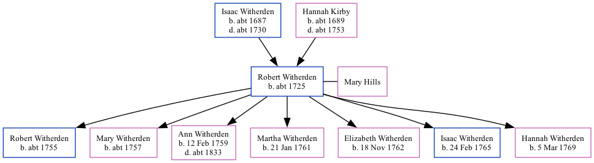

Robert Witherden c1725 -
[ Home ] | [ Calendar ] | [ Surnames Index ] | [ Family History ]The child of Isaac Witherden and Hannah KirbyRobert Witherden, the 5 times great-grandfather of Nigel Horne, was born c. 1725, was baptized in St Peters, Thanet, Kent, England on Feb 17, 1725 and also married Mary Hills (with whom he had 7 children: Robert, Mary, Ann, Martha, Elizabeth, Isaac and Hannah) there, on Apr 22, 1755.
Parents
- Isaac was born c. 1687
- Hannah was born c. 1689
Children
- Robert was born c. 1755
- Mary was born c. 1757
- Ann was born on Feb 12, 1759
- Martha was born on Jan 21, 1761
- Elizabeth was born on Nov 18, 1762
- Isaac was born on Feb 24, 1765
- Hannah was born on Mar 5, 1769
Media
Kent, Canterbury Archdeaconry marriages 1538-1928 - GBPRS/CANT/M/97132530/1
England Marriages 1538-1973 - R_847900446
England Marriages 1538-1973 - R_847900501
Family Tree
Generated by ged2site. Last updated on Nov 13, 2024